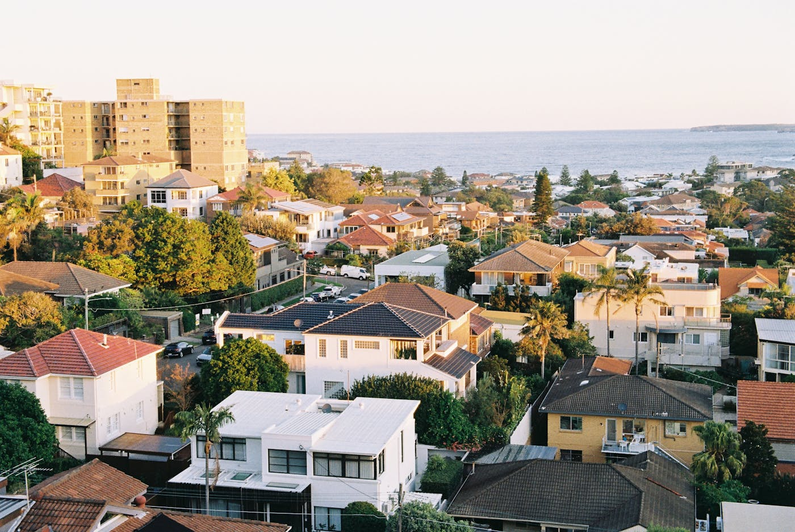
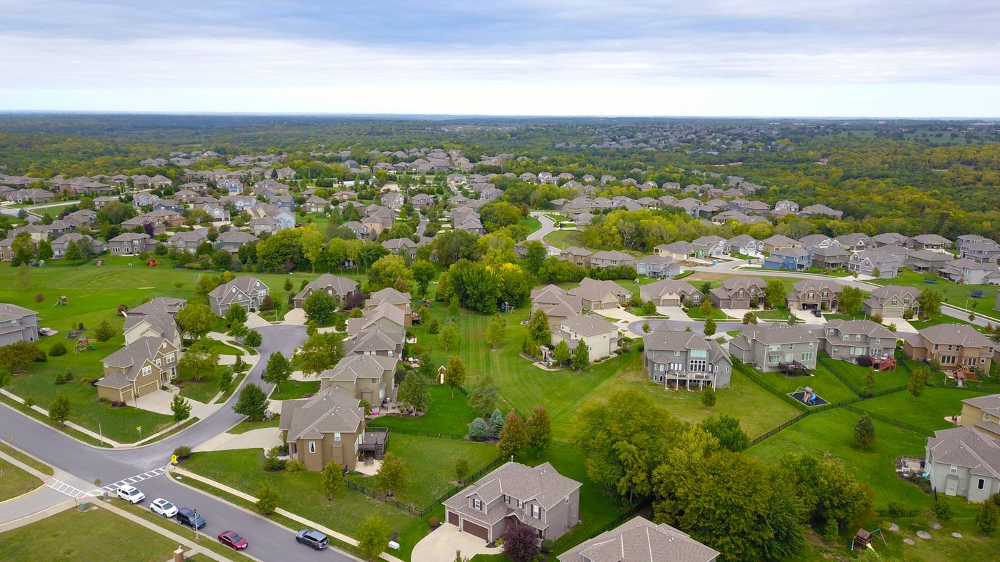

Quick answer: Building in Bondi means dealing with Waverley Council DAs (3–6 months for standard residential, 6–14 months for heritage applications), heritage conservation area controls covering most of the beachside residential fabric, coastal marine-grade specifications within 1km of the beach, and lot sizes that are often under 250m². Construction costs run $5,500–$8,500 per m² for mid-to-high specification custom builds in 2026. Land values in Bondi typically make renovation of an existing dwelling more financially rational than knockdown rebuild — the opposite of most suburban Sydney markets.
Bondi has a reputation for being expensive. This reputation is, if anything, undercooked. When land runs $3,000–$5,000 per square metre and the lot is 200m², the financial arithmetic of construction decisions is fundamentally different from the rest of Sydney. What makes sense on a 700m² Parramatta block often does not make sense on a 220m² North Bondi terrace — and the builder who understands that distinction is a different kind of builder from the one who quotes the same way everywhere.
[Right. Straight face now.] This guide covers what building in Bondi actually involves: the Waverley Council process, the heritage reality, the coastal specifications that a surprising number of builders underdeliver, and the financial logic of renovation versus new build in a market where the land is worth ten times the structure sitting on it.
- What makes building in Bondi different
- What it costs to build in Bondi in 2026
- Waverley Council: DA process and controls
- Heritage in Bondi — what’s listed and what it means
- Coastal specifications within 1km of the beach
- Building on Bondi’s narrow lots
- Renovation vs knockdown rebuild in Bondi
- Choosing a builder with Bondi experience
- When not to build in Bondi
- FAQ
What Makes Building in Bondi Different
Three factors converge in Bondi that do not converge to the same degree anywhere else in Sydney: extraordinary land value, substantial heritage overlay, and coastal proximity. Each one individually shapes how a builder must operate. All three together create a project environment that rewards experience and punishes assumptions.
Land value. When land is worth $3M–$5M on a standard Bondi block, the financial justification for any construction decision changes. A renovation that costs $800,000 is not 80% of the land value — it is a relatively modest investment relative to the asset it improves. A knockdown rebuild that costs $1.8M–$2.5M all-in (construction only, on land you already own) must produce a result significantly better than what renovation delivers to justify erasing what is already there. The maths is different, and a builder who does not understand it will give you advice calibrated to a different market.
Heritage overlay. Waverley Council has 325 heritage-listed items in its LEP and significant Heritage Conservation Areas across the beachside precincts. Most of the residential fabric around Bondi Beach and North Bondi — the Federation cottages, the interwar bungalows, the early residential flat buildings — sits within or adjacent to these overlays. This is not a theoretical constraint. It affects what you can demolish, what you can build, and how long the approval process takes.
Coastal proximity. Bondi Beach is a genuine ocean beach with the salt-air exposure that implies. Properties within 1km of the beach require marine-grade construction specifications that add 10–18% to construction cost. A builder who does not routinely work on Eastern Suburbs coastal sites will underspecify these requirements. The result is a home that looks identical to a correctly specified one at handover and costs substantially more to maintain within 5–10 years.
What It Costs to Build in Bondi in 2026

Photo via Pexels
| Specification | Bondi / Eastern Suburbs (per m²) |
|---|---|
| Mid-range custom | $5,500 – $7,500 |
| Luxury custom | $7,500 – $10,000 |
| Premium architectural | $10,000 – $15,000+ |
These figures reflect the Eastern Suburbs premium: higher trade rates, difficult site access on narrow Bondi streets, coastal specifications, and the complexity that heritage-sensitive work introduces. A 200m² new build at mid-range specification costs $1.1M–$1.5M in construction. A 250m² luxury custom home runs $1.875M–$2.5M. These are construction-only figures.
Add to construction costs:
- Design and documentation: $80,000–$200,000 for a quality architect on a complex Bondi site
- Heritage architect fees (if required): $15,000–$40,000 for Statement of Heritage Impact preparation
- Waverley Council DA fees and Section 7.11 contributions: $30,000–$80,000 depending on development value
- Demolition of existing structure: $25,000–$60,000 (asbestos management likely in pre-1990 homes)
- Landscaping and outdoor finishes: $50,000–$150,000
A complete knockdown rebuild in Bondi — on land you already own — lands between $1.8M and $4M+ all-in, depending on size and specification. On land you are purchasing at $3M–$5M+, total project cost for a premium new build reaches $5M–$9M+. This arithmetic explains why the majority of Bondi residential projects are high-quality renovations and extensions rather than knockdown rebuilds. For comparison with Eastern Suburbs build costs and approvals more broadly, see our post on custom architectural home builders in the Eastern Suburbs.
Waverley Council: DA Process and Controls

Photo via Pexels
Waverley Council administers planning for the Waverley LGA, which includes Bondi Beach, North Bondi, Bondi Junction, Bronte, Clovelly, and Dover Heights. The Council’s Waverley LEP 2012 and Waverley DCP 2012 govern residential development.
Standard residential DA timeline
For straightforward new dwelling applications on non-heritage sites in the R2 zone, Waverley Council processes DAs in approximately 3–6 months. This is longer than most Western Sydney councils but shorter than Woollahra and Ku-ring-gai for comparable applications. The Council accepts pre-DA meeting requests for complex applications, which is strongly recommended for any project involving heritage, coastal zone considerations, or unusual site constraints.
Heritage DA timeline
Heritage DAs — required for any work on heritage-listed properties or within Heritage Conservation Areas — take 6–14 months depending on complexity. A simple addition to a contributing heritage dwelling in a conservation area sits at the lower end. Demolition of an existing building in a conservation area, or any work on a State Heritage Register-listed property, sits at the upper end and may require concurrence from the NSW Heritage Council.
CDC availability in Bondi
Complying Development Certificate approval — the 20-business-day pathway via a private certifier — is technically available for eligible Bondi lots that are not in heritage conservation areas and whose designs meet the Housing SEPP standards. In practice, very few residential sites near Bondi Beach qualify, given the combination of heritage overlays and coastal zone provisions that apply across most of the beachside residential precincts. Lots in the outer streets of North Bondi further from the beach are more likely to qualify. Check your specific lot on the NSW Planning Portal before assuming either pathway.
Waverley’s floor space ratio controls in R2 zones typically apply a 0.6:1 FSR, allowing slightly more floor space per land area than many other Sydney LGAs. On a 250m² lot this means 150m² of floor space — modest by suburban standards but achievable across two levels with a well-designed floor plan. The 8.5m height limit applies across most of the Bondi residential zone, accommodating a standard double storey.
Heritage in Bondi — What’s Listed and What It Means
Waverley Council’s heritage framework is one of the most active in the Eastern Suburbs. The 325 items listed in the Waverley LEP range from individually significant dwellings to entire streetscapes within Heritage Conservation Areas.
The residential fabric most commonly affected:
- Federation cottages (1890s–1910s): Bondi Beach’s oldest residential stock. Many are individually listed; others contribute to conservation area character. Demolition is rarely approved. Renovation and sympathetic extension is the approved approach.
- Interwar bungalows (1920s–1940s): Californian bungalow and other interwar styles that form the dominant character of North Bondi streetscapes. Often in conservation areas.
- Early residential flat buildings (1930s–1950s): Red brick walk-up blocks common in Bondi Beach. Some are individually listed; the style contributes to conservation area character even where not listed.
For any property in or near a Heritage Conservation Area, the first conversation with your builder should be: has this site been checked against the heritage mapping? The Waverley Council heritage register lists all affected properties. A builder who does not check this before quoting is not familiar with how Bondi projects work.
What heritage constraints mean for a renovation or extension:
- Alterations visible from the street must be sympathetic to the heritage character of the dwelling and the conservation area
- Original features — facades, rooflines, verandahs, fenestration patterns — must generally be retained or accurately replicated if damaged
- Contemporary additions at the rear and first floor are generally acceptable if not visible from the street and designed with appropriate setback and articulation
- A Statement of Heritage Impact, prepared by a heritage architect, is required as part of any DA affecting a listed property
This does not mean you cannot build anything interesting on a heritage site. Some of Sydney’s most compelling residential projects have involved genuine architectural creativity behind a retained heritage facade. The constraint is the street-facing presentation, not the whole project.
Coastal Specifications Within 1km of the Beach
The majority of Bondi Beach and North Bondi residential properties sit within 1km of the ocean. At this distance, salt-air exposure is significant enough to require construction specifications beyond the standard residential grade — and significant enough that underspecification produces visible deterioration within a few years.
Marine-grade specifications required within 1km of the ocean in Bondi:
- Structural steel: Hot-dipped galvanised (HDG) or stainless steel for all structural elements. Standard mild steel used on inland Sydney builds will rust visibly within 3–5 years at this coastal distance.
- Window and door frames: Commercial-grade extruded aluminium, not standard powder-coated aluminium. The frame sections must be thicker and the finish must be marine-grade anodised or powder coated to a coastal specification.
- Fixings and fasteners: Grade 316 stainless steel throughout — roofing screws, structural bolts, balustrading hardware, and facade fixings. Standard zinc-plated fixings corrode in coastal conditions.
- Roofing: Colorbond steel is appropriate with correct flashing and fixing specification. Copper and zinc sheet are viable premium alternatives. Painted standard steel is not adequate within 500m of the beach.
- Concrete: N32–N40 concrete with increased steel cover in slabs and footings, particularly where saline groundwater or salt-air penetration is a factor.
Ask any builder you are considering for a Bondi project: “What marine-grade specification do you apply within 1km of the beach?” A builder who answers with specifics — HDG steel, grade 316 fixings, commercial-grade aluminium frames — understands coastal construction. A builder who answers with “we build to Australian Standards” without specifics may be confusing the standard for inland construction with the additional requirements for coastal locations. They are not the same standard.
Building on Bondi’s Narrow Lots
Many Bondi residential lots are narrow. The terrace-style subdivision pattern that characterises much of the beachside precinct produces lots of 5–7m frontage and 200–280m² total area. Building on these lots requires builders and designers who understand how to make tight sites work — and council planners who see this regularly enough to assess it sensibly.
The implications of narrow Bondi lots for construction:
- Access: Materials delivery and trades access on narrow streets with limited on-street parking requires careful logistics management and often a Construction Traffic Management Plan as part of the DA
- Scaffolding: External scaffolding on a narrow frontage lot frequently requires a road occupancy licence from the council — add $3,000–$8,000 and several weeks to the process
- Floor plan efficiency: At 5–6m internal width, the staircase position dominates the floor plan. Every square metre of staircase footprint is a square metre not used for living. Double storey is often the only way to achieve adequate floor space within FSR limits. For the structural and staircase considerations that apply, see our guide to double storey home builders in Sydney
- Neighbour impact: Side setbacks on narrow lots mean construction activity is immediately adjacent to neighbours. Expect heightened scrutiny of neighbour objections in the DA process, and plan for a construction management approach that addresses noise and access impact directly
Renovation vs Knockdown Rebuild in Bondi
This is the section most builder guides in Bondi skip, because most builders are in the business of building new things. The honest answer for many Bondi properties is renovation — and a builder who tells you otherwise without running the numbers is giving you advice that serves their revenue, not your interests.
Why renovation often makes more financial sense in Bondi:
The land-to-structure ratio is extreme. On a $4M Bondi block, the existing dwelling — even in poor condition — represents a small fraction of the total asset value. Spending $800,000–$1.5M on a thorough renovation produces a result whose total value (land + improved structure) compares favourably to the same block knocked down and rebuilt for $2.5M–$3.5M all-in. The margin often does not justify erasure.
Heritage constraints often make demolition impossible anyway. On a heritage-listed Federation cottage in a Bondi conservation area, demolition is not typically available as an option. The council’s assessment of demolition applications in these areas defaults to refusal unless the building is in a condition beyond economic repair. Renovation is not just the financial choice — it is frequently the only approved one.
Pre-1990 stock can be genuinely good bones. Many Bondi Federation and interwar dwellings have solid masonry construction, generous ceiling heights, and original details — timber floors, original joinery, leadlight windows — that a new build cannot replicate at any budget. A well-executed renovation that preserves the good and replaces the poor often produces a more desirable result than a new build on the same lot.
Knockdown rebuild makes more sense in Bondi when: the existing structure is severely dilapidated beyond economic repair (structural failure, irreparable asbestos, significant rising damp); the site is not in a conservation area and the existing building has no heritage merit; or the existing dwelling’s floor plan is so poorly suited to the brief that renovation requires more structural intervention than demolition and rebuild. These are specific, not general, conditions. For guidance on how to run this comparison in Sydney, see our post on how to choose a builder for renovation.
Choosing a Builder With Bondi Experience
The builder you need for a Bondi project has three specific qualifications beyond the standard NSW contractor licence:
1. Waverley Council track record. Heritage DAs in Waverley are assessed by council planners who know the area well. A builder who has successfully navigated multiple Waverley DAs — including heritage applications — understands how those planners think and what the council’s documentation requirements are. Ask for examples of completed Waverley projects, then verify them on the council’s public DA register.
2. Coastal specification competence. Ask specifically what marine-grade specifications they apply within 1km of the beach. If the answer is a specific list (HDG steel, grade 316 fixings, commercial-grade aluminium), the builder understands coastal construction. If the answer is vague, the builder may not have the coastal track record your Bondi site requires.
3. Narrow lot experience. Building on a 220m² lot in a dense terrace streetscape requires a different approach to construction logistics, scaffolding, and neighbour management than a standard suburban site. Ask how many projects they have completed on lots under 300m² in the Eastern Suburbs. This is where the relevant experience lives.
For a full checklist of how to assess any builder before engaging them for a complex Sydney project, see our guide on how to choose a custom home builder.
When Not to Build in Bondi
This section is the one most builder guides omit entirely. We are not most guides.
Do not start a Bondi building project without a realistic all-in budget including land. If you own the land already, the construction cost alone for a quality result starts at $1.1M for a modest renovation and reaches $2.5M+ for a meaningful new build. If you are purchasing land, add $3M–$5M+ before a single trade has been engaged. The total commitment is significant. Running the numbers before engaging a designer is not pessimism — it is the minimum required before spending $80,000 on architectural documentation for a project that may not be financially viable.
Do not proceed with a builder who cannot name completed coastal projects in the Eastern Suburbs. “We build to Australian Standards” applied to Bondi coastal construction without the specific marine-grade additions is not adequate. Ask for the addresses of completed coastal builds, contact the owners, and ask specifically how the fixings and frames are holding up after 3–5 years. This is the reference that matters for a Bondi project.
Do not assume CDC is available. Most Bondi residential sites near the beach sit within heritage conservation areas or coastal zone provisions that exclude CDC. Assuming 20-business-day approval without verifying your specific lot’s eligibility builds a false timeline into your planning. Verify first, plan accordingly.
Do not make the knockdown-rebuild decision without running the renovation comparison. The financial case for demolition in Bondi is narrower than it appears. A builder who recommends knockdown without running the renovation comparison is advising from a position of commercial interest, not financial analysis.
FAQ
How much does it cost to build in Bondi in 2026?
Custom home construction in Bondi runs $5,500–$8,500 per m² for mid-to-high specification in 2026. A 200m² mid-range custom home costs $1.1M–$1.7M in construction before land, design, DA costs, and landscaping. Knockdown rebuild on land you already own runs $1.8M–$4M+ all-in depending on size and specification. Land in Bondi typically costs $3M–$5M+, making total project costs for a premium new build $5M–$9M+ in most scenarios.
How long does a DA take with Waverley Council?
Standard residential DAs: 3–6 months. Heritage DAs (required for heritage-listed properties and Heritage Conservation Area sites): 6–14 months. CDC via private certifier (approximately 20 business days) is available for eligible lots not in heritage conservation areas or coastal zone restrictions — few Bondi Beach and North Bondi sites near the beach qualify. Check your lot on the NSW Planning Portal.
What are the coastal building requirements in Bondi?
Within 1km of the beach: hot-dipped galvanised or stainless structural steel, commercial-grade aluminium window and door frames, grade 316 stainless fixings throughout, and corrosion-resistant roofing. These add 10–18% to construction cost. Ask any builder you are considering to specify exactly which marine-grade standards they apply — a specific answer indicates coastal competence; a vague one does not.
Is it better to renovate or knock down and rebuild in Bondi?
In most Bondi scenarios, renovation is the more financially rational choice given extreme land values. Spending $800,000–$1.5M on a thorough renovation of a $4M land holding is often more efficient than demolishing and rebuilding for $2.5M–$3.5M all-in. Heritage constraints frequently make demolition unavailable anyway. Knockdown rebuild makes sense when the existing structure is beyond economic repair or the site offers a substantially better development outcome under the current planning controls.
What heritage restrictions apply to building in Bondi?
Waverley Council lists 325 heritage items in its LEP and 15 on the State Heritage Register. Heritage Conservation Areas cover significant portions of the Bondi Beach and North Bondi residential precincts. Demolition of existing buildings in conservation areas is rarely approved. Alterations visible from the street must respond to the heritage character. Contemporary rear and upper additions are generally acceptable if not visible from the street. A Statement of Heritage Impact is required for all DA applications affecting heritage-listed properties or conservation area sites.
What are the minimum lot sizes in Waverley for new dwellings?
Waverley LEP applies minimum lot size controls that vary by zone. Most existing Bondi residential lots are 200–400m². The FSR in R2 zones is typically 0.6:1 — on a 250m² lot, that is 150m² of total floor space. Double storey is often the only way to achieve adequate floor area within these controls on Bondi’s compact lots. Check your specific lot on the NSW Planning Portal before briefing a designer.